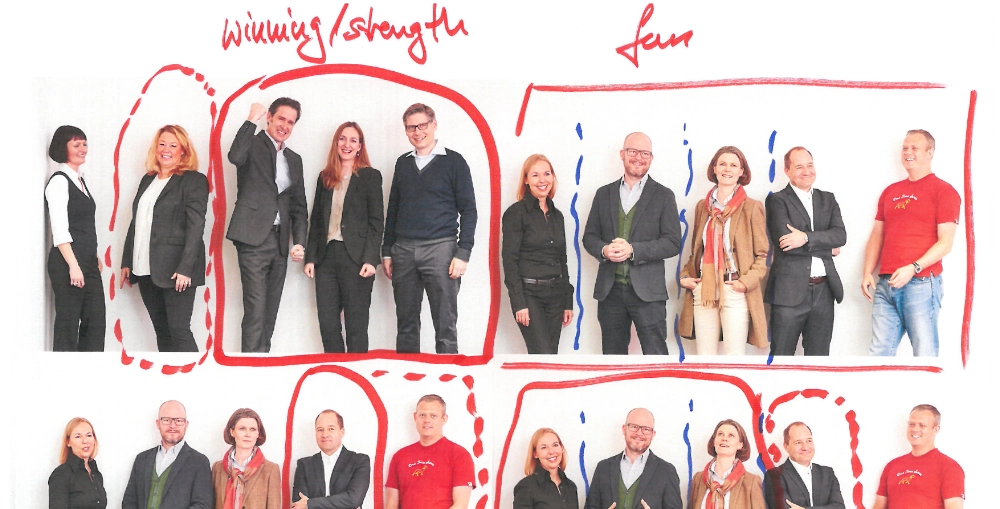

Work in progress
Digital Labs
Projects we are working on to carry leadership development beyond the workshop.
Everything we do in a room has one limit: it ends. Digital Labs is where we work on what happens around it — before the first module, between sessions, and long after the last one. Four products at different stages of maturity, built on the same idea: that development should be measurable, continuous, and available at the moment the work actually happens.
01
ReadyMLG Learning Platform
The digital companion to every program we deliver. Participants prepare before each module, go deeper between sessions, and keep every tool and material within reach long after the program ends.
Fully customized
Your branding, your structure, your content, your naming. Nothing off the shelf.
All materials in one place
Slide decks, workbooks, documents, videos and curated links — any time, on any device.
Structured journeys
Modules and deep dives that unlock as the program progresses.
Hosted in Germany
Participant data stays on German infrastructure.
02
ConceptEvaluations
Development that cannot be measured cannot be defended. Our evaluation suite tracks what a program actually changes — in behaviour, in teams, and in the numbers the business already cares about.
Before and after
A baseline at the start, the same dimensions measured again at the end.
A 360° perspective
Self-assessment set against the view of peers, reports and leaders.
Transfer, not satisfaction
What participants do differently afterwards — not how much they enjoyed the room.
Built for sponsors
Results aggregated into something a board can read in one sitting.
03
ConceptMLG Coach
A coach is most valuable in the moment a decision is being made — rarely the moment a session happens to be scheduled. MLG Coach puts structured reflection into that gap.
Available between sessions
For the situations that will not wait until the next appointment.
Grounded in our methodology
The same frameworks our coaches use, not generic advice.
Prepares the human conversation
It sharpens what to bring to the next session rather than replacing it.
Confidential by design
What a leader works through stays with that leader.
04
AvailableBPTI — Best Performance Team Inventory
Our free tool for a sound first impression of a team’s performance status. It locates a team along six drivers of performance and starts the conversation about where to intervene.

Giving orientation
Reducing complexity
Making decisions
Developing oneself
Empowering others
Operational excellence
Want to see one of these properly?
These pages are an internal preview. If something here is relevant for your organization, we will walk you through it.
Get in touch